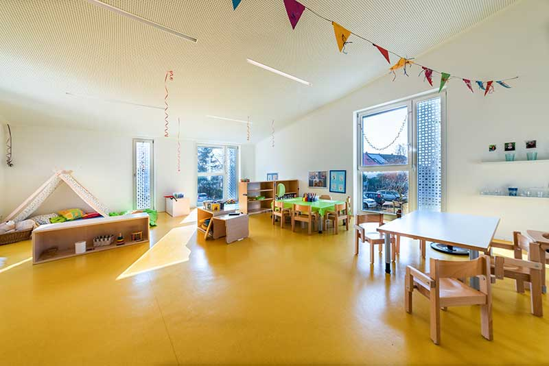
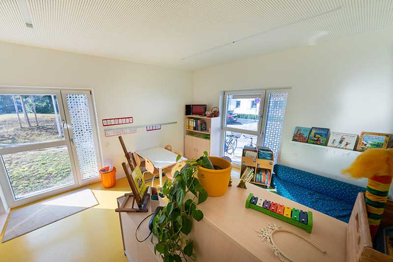
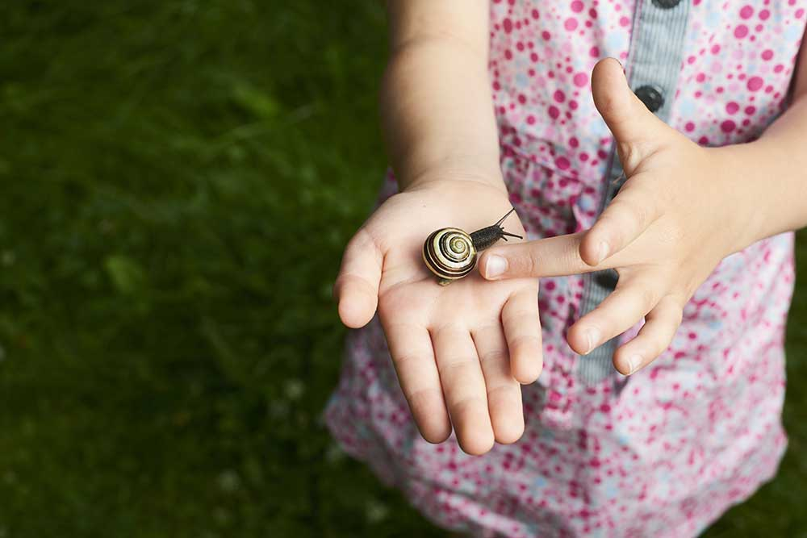
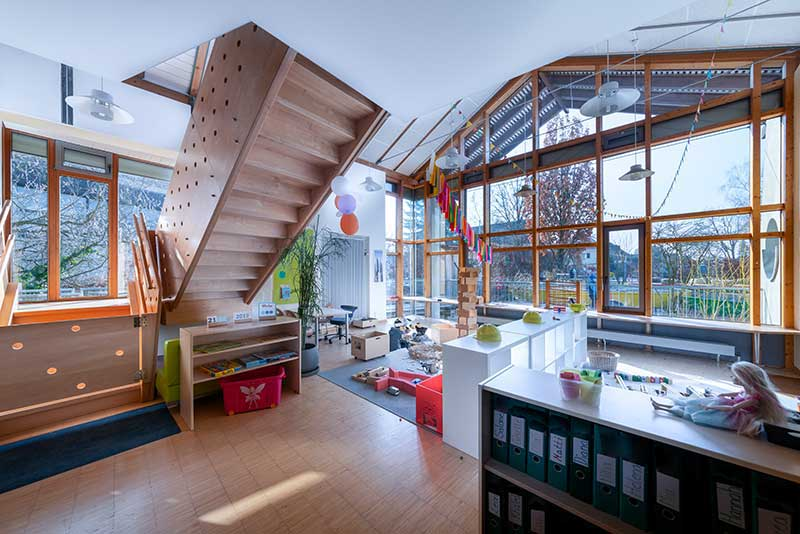

Betreuungsangebot
Ganztagesbetreuung in zwei Kindergartengruppen und in der Krippe sowie verlängerte Öffnungszeiten in einer weiteren Gruppe.
Zeiten & BeiträgeBeobachten – begleiten – fördern. Wir sehen das Kind als Individuum mit eigenen Vorstellungen, Bedürfnissen und Meinungen.


Unser Bild vom Kind
Durch den schnelllebigen gesellschaftlichen Wandel wachsen heutzutage viele Kinder in einer unsicheren und oft strukturlosen Umgebung auf. Um dies aufzufangen, brauchen Kinder Erzieherpersönlichkeiten, die sie annehmen, ihre Eigenverantwortlichkeit stützen und stärken und durch ihr liebevoll konsequentes Handeln Orientierungshilfe geben.
Dies kann nur in einer vertrauensvollen Atmosphäre gelingen. Das Kind als Individuum ist aber auch Teil einer Vielfalt sozialer Beziehungen. Deshalb ist es uns ein Anliegen, soziale Kompetenzen zu fördern: Freundschaften schließen, Problem- und Konfliktlösungsstrategien entwickeln und umsetzen.
Die Rolle der Erzieher/innen
Beobachtung und Dokumentation bilden die Grundlage unseres pädagogischen Handelns.
Ausgangspunkt unserer Planung ist die Berücksichtigung der Interessen und Bedürfnisse der Kinder. Wir nehmen die vielfältigen Äußerungen der Kinder sensibel wahr.
Kinder werden in ihrem Spiel ernst genommen und durch Materialien und Räume in ihrer Kreativität angeregt. Wir sind Unterstützer/in, Berater/in und Partner/in.
Selbstständiges und eigenverantwortliches Tun steht im Mittelpunkt – hin zu mehr Mündigkeit und Verantwortung, in einem von gegenseitiger Achtung geprägten Miteinander.
Hilf mir, es selbst zu tun!Maria Montessori – unser Leitmotiv
Erziehungs- und Bildungsverständnis
Bildung und Erziehung bestimmen im Kinderhausalltag das pädagogische Handeln unserer Fachkräfte.
„Erziehung“ meint die Unterstützung und Begleitung, Anregung und Herausforderung der Bildungsprozesse – etwa durch Eltern und pädagogische Fachkräfte. Sie geschieht indirekt durch das Vorbild der Erwachsenen und durch die Gestaltung von sozialen Beziehungen, Situationen und Räumen. Direkt geschieht sie beispielsweise durch Vormachen und Anhalten zum Üben, durch Wissensvermittlung sowie durch Vereinbarung und Kontrolle von Verhaltensregeln.
„Bildung“ meint die lebenslangen und selbsttätigen Prozesse der Weltaneignung von Geburt an. Bildung ist mehr als angehäuftes Wissen: Kinder erschaffen sich ihr Wissen über die Welt und sich selbst durch ihre eigenen Handlungen. Kindliche Bildungsprozesse setzen verlässliche Beziehungen und Bindungen zu Erwachsenen voraus – Bildung ist ein Geschehen sozialer Interaktion.
Ein Kind ist kein Gefäß, das gefüllt, sondern ein Feuer, das entzündet werden will!François Rabelais
Bildung ist …
Bildung ist eine Leistung jedes einzelnen Kindes – sie lässt sich nicht von außen einfüllen.
Kinder brauchen Personen, Materialien, Räume und Zeit, um voranzukommen. Anerkennung und Wertschätzung sind dabei wesentliche Grunderfahrungen.
Bildung ist nicht produkt-, sondern prozessorientiert. Nicht das fertige Produkt, sondern der Weg dahin ist wichtig.
Erfahren Sie mehr

Ganztagesbetreuung in zwei Kindergartengruppen und in der Krippe sowie verlängerte Öffnungszeiten in einer weiteren Gruppe.
Zeiten & Beiträge
Drei Stockwerke, elf Funktionsbereiche und ein großer Außenspielplatz – klicken Sie sich durch die Grundrisse.
Grundrisse ansehenSie möchten einen Platz anfragen, unser pädagogisches Konzept anfordern oder das Kinderhaus besichtigen? Schreiben Sie uns – wir melden uns zurück.